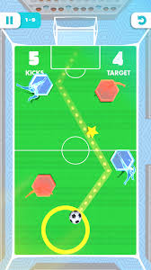
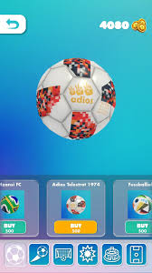
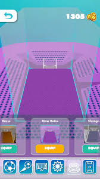
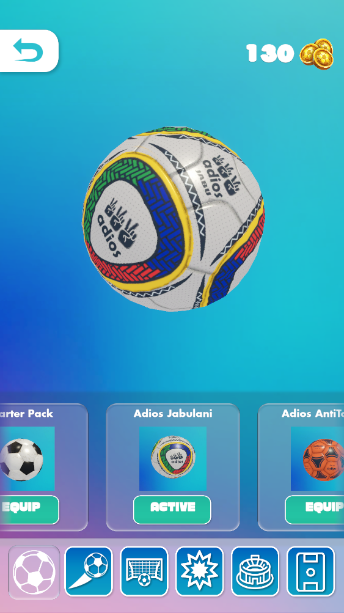

Super Diski FC
☰
LADUUUUMA!!!
Super Diski FC (2025) is a physics-based strategic football game. Players must aim and drag the ball to score, whilst avoiding any obstacles that may be in the way. Completing missions gives players coins, and players can buy new balls and stadiums with that money.




×
 ❮
❯
❮
❯

Developed by Disputed People Games
Based in Rosebank, Johannesburg. Much like Nyamakop, this studio is comprised of South Africans from across the country, with many coming from the University of the Witwatersrand. Click here to see more by them.